01 · Form
A long form on two pages
All questions were in two columns and the page needed a lot of scrolling. The second page had the e-mail and the confirmation code.
Onboarding · Fintiba
The mandatory form for opening a blocked account was one long form. I designed a new flow for Web and the app: one question per screen, conditional branches for the user's situation and answers to common questions under the field.
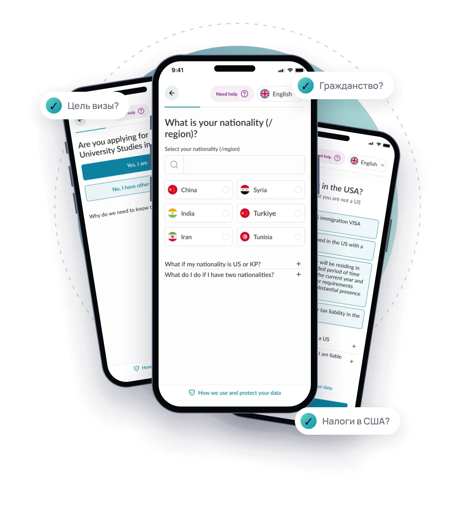
This is the user's path: one question per screen, and the answer defines the next step.
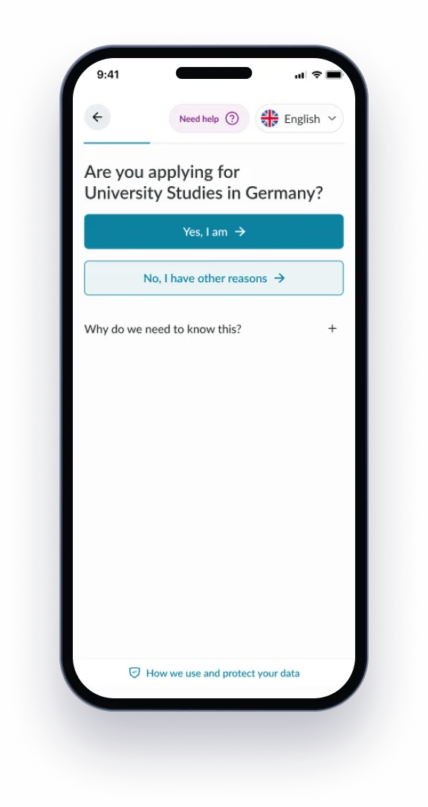
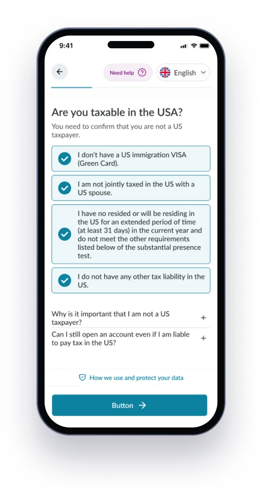
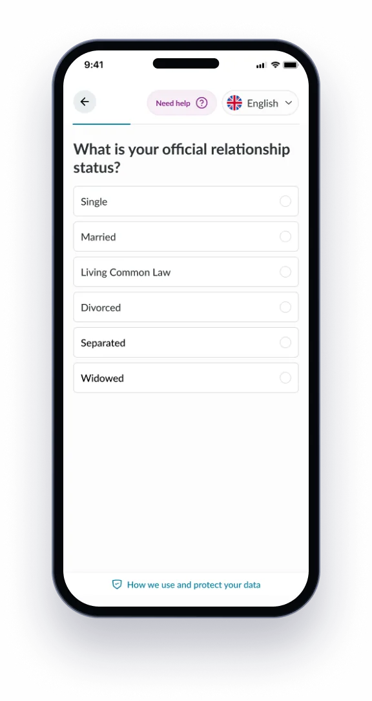
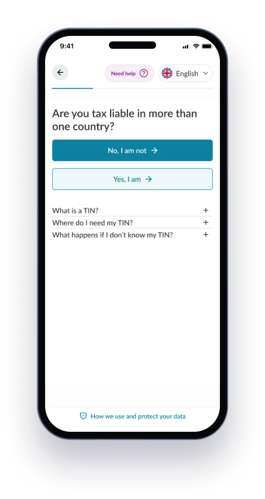
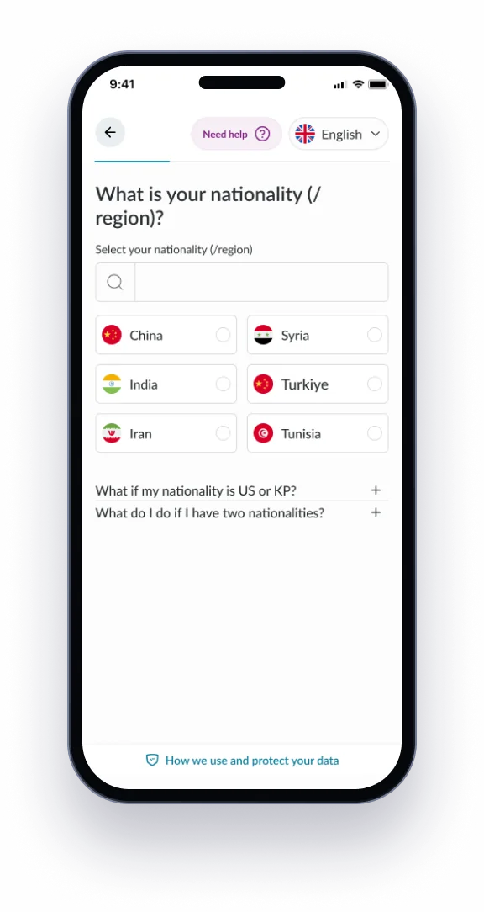
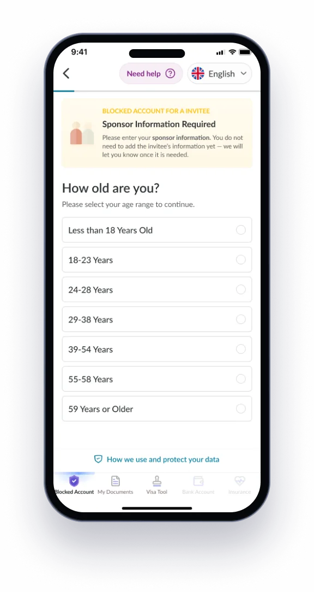
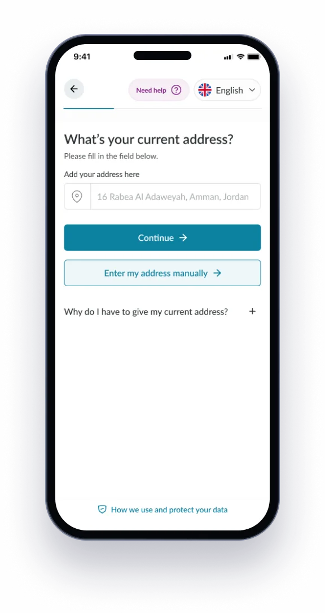
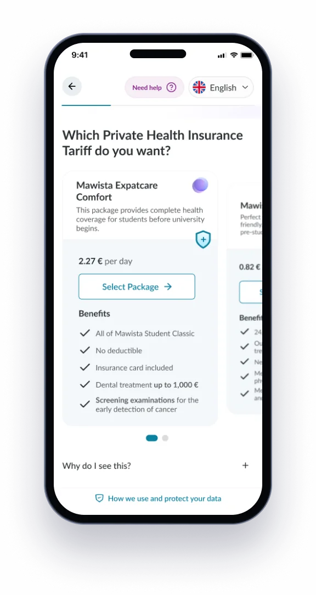
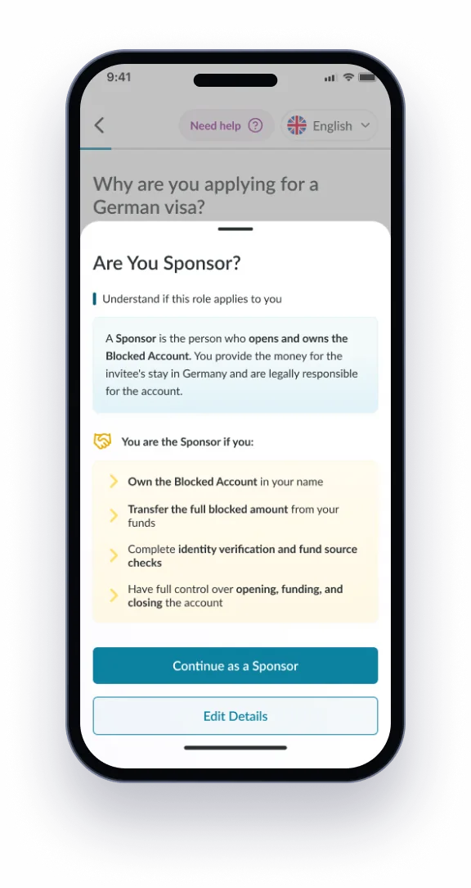
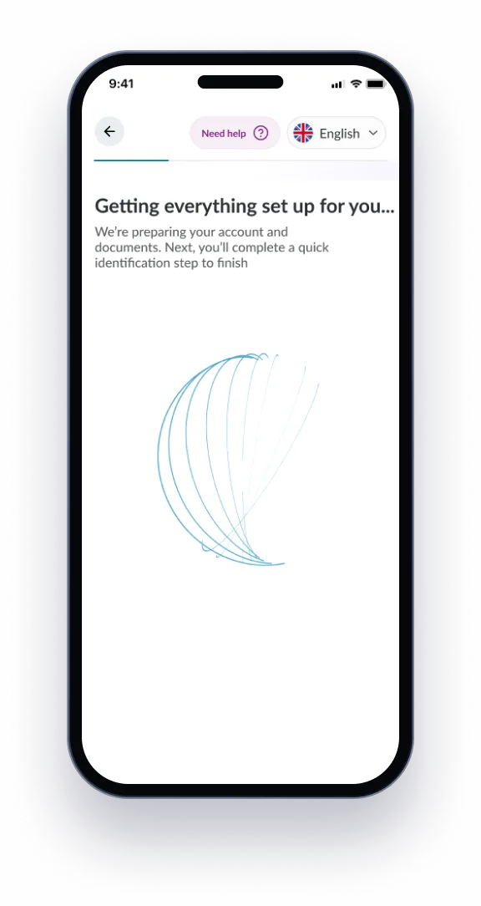
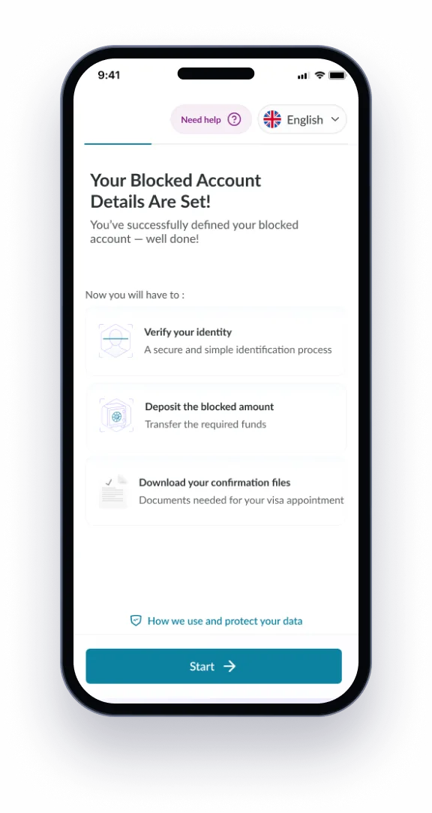
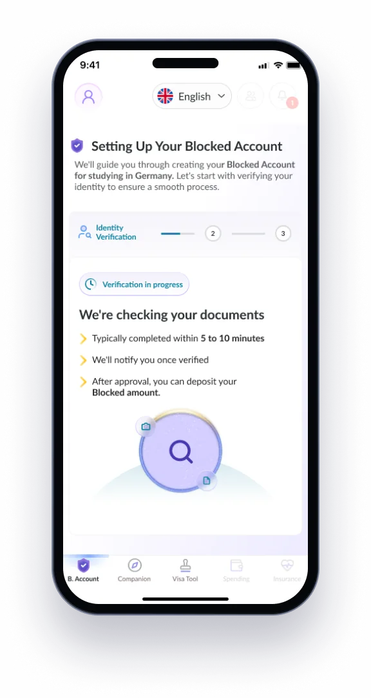
Section 01 / 05
Product, role, the old form's problem and the goal
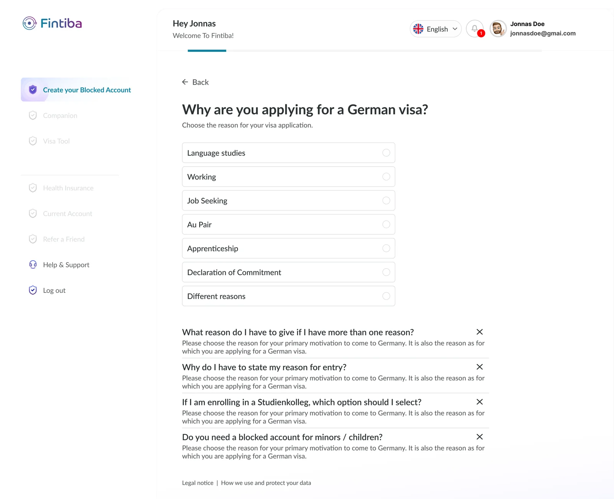
Product
Required for a German visa. Customers are foreigners moving to Germany to study, work or look for work. Until the form is complete, the account can't be opened.
19–28
screens depending on answers, after sign-up
Scenarios
Student, sponsor (opens an account for someone else) and minor (a parent opens it)
My role
I was responsible for the form flow: question order, conditional branches and screens for Web and the app. For the first six months I worked alone, then a senior designer joined — we discussed decisions together, and I designed the flow. Launch: summer 2024. For two more years I refined the flow and moved it onto the design system.
Team
The “one question per screen” format was suggested by the product owner, who also prepared the FAQ copy. I wrote the button copy. Decisions were discussed with the product owner, the senior designer and developers.
What was in my area of responsibility on this flow.
I reviewed the onboarding of four competitors and looked at the PostHog funnel with the product owner.
I split the long form into steps: one question per screen.
I described which question appears after which answer and where the flow ends.
Every step is designed for desktop and for the native app, with the same logic.
I discussed decisions with the product owner, the senior designer and the team; the flow was refined all the time.
The old form: a long two-page form with questions in two columns.

01 · Form
All questions were in two columns and the page needed a lot of scrolling. The second page had the e-mail and the confirmation code.
02 · Minors
You had to go to another page and fill in everything again.
03 · Hints
They weren't everywhere and only showed on hover over the “i” icon. There was no FAQ.
04 · Funnel · PostHog
Users didn't reach the end of the form. With the product owner we looked at the PostHog funnel by form field. Insurance was often skipped: the form didn't explain why it was needed.
The old interface wasn't preserved, so this is a diagram, not a screenshot. The case has no funnel numbers.
Design goal
Success criteria: the user sees which stage they're at; sees only the questions for their situation; can go back and fix an answer; goes through the same logic on Web and in the app.
The form couldn't be shortened: every question is required to open the account. The task was not to remove questions but to help users get through them without mistakes.
Section 02 / 05
Competitors and the old form's funnel
The task came from the product owner. Before designing, I gathered three sources to understand what to change in the old form.
| Expatrio | Coracle | EDUBAO | Studely | Fintiba before | Fintiba after | |
|---|---|---|---|---|---|---|
| Onboarding format | one question per page | 2–3 questions per page | one page | one page | long form, 2 pages | one question per page |
| Insurance in onboarding | ✓ | ✕ | ✕ | ✕ | yes, without explanation | ✓ with explanation and FAQ |
Finding 1
Of the four competitors, only Expatrio used “one question per screen”. The product owner suggested taking it as the basis. My task was to fit all of Fintiba's mandatory questions and branches into this format.
Finding 2
The old form had insurance, but without explaining what it is and why. The PostHog funnel showed it was often skipped. In the new flow insurance is a separate step with plans, an FAQ and a “Decide later” option.
Section 03 / 05
Key decisions, step anatomy and branches
The four main problems of the old form and what I did about each.
Questions in two columns, scrolling, sign-up at the end
Only the current question is on screen. Sign-up moved to the start of the flow after the product owner's A/B test.
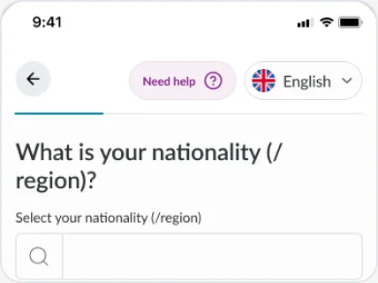
Another page and filling in again
Under 18 stays in the same flow, with a note: a parent opens the account.
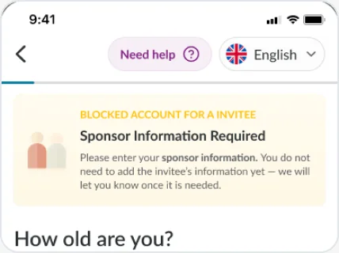
Only on hover over “i”, no FAQ
An FAQ under every question and a Need help button on every step.
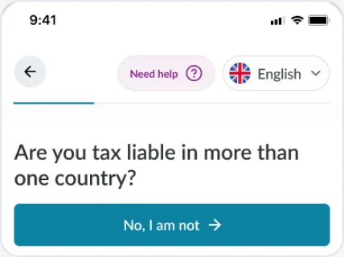
It was unclear what it is and why
Plans as cards, an explanation and an FAQ. The step can be postponed with Decide later.
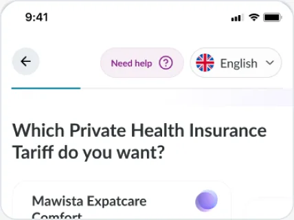
Using citizenship selection as an example.
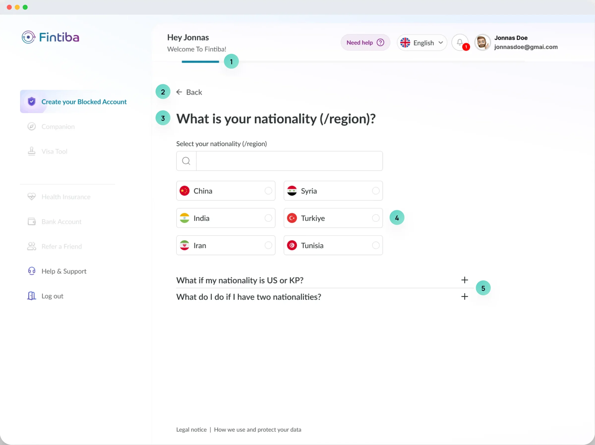
Swipe to see more →
Shows how much of the form is done.
Returns to the previous question.
One clear question per page, without extra text.
The most common countries are on screen; the rest are found via search.
Common questions expand under the field without leaving the screen.
I described which question appears after which answer. The main fork is passport access. Without a passport, the user enters data manually. With a passport, they only pick an age range: then they photograph the passport in the Onfido identity check, and the date of birth updates automatically.


Section 04 / 05
Entry, an edge case, Web and app, the end of the flow
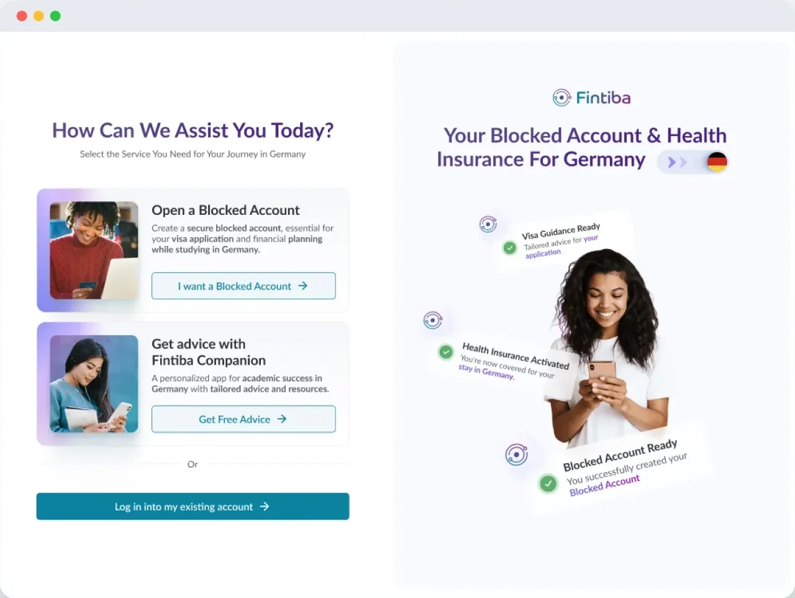
Onboarding starts with choosing a product: “Open a Blocked Account” leads to sign-up (e-mail or Google) and a confirmation code.
The login screen was designed by another designer; I refined it.
On the “Are you taxable in the USA?” step, the user confirms four conditions of their US tax status.
The “I confirm that I am not a US tax resident” button stays disabled. Fintiba doesn't open accounts for US tax residents, so for them the flow ends here. Every user sees this step.
Below the form is an FAQ: why this matters and whether an account can be opened with US tax obligations.

Web and the app share one logic. The only difference: the app has no large info banners in the sponsor and minor branches.
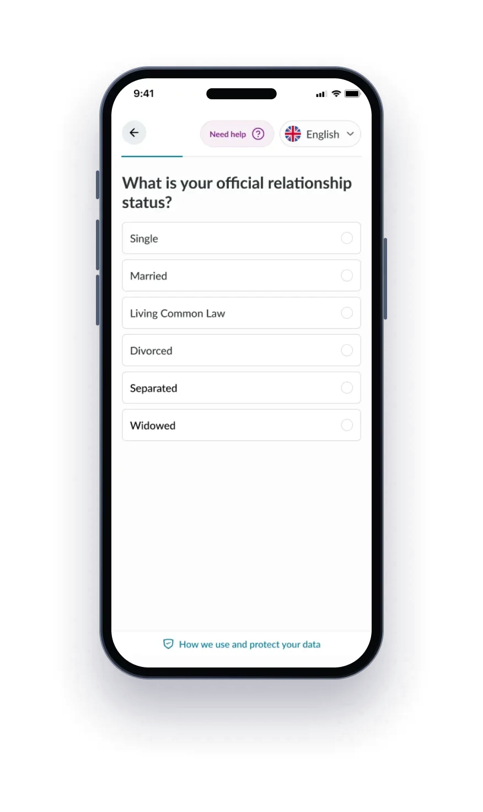
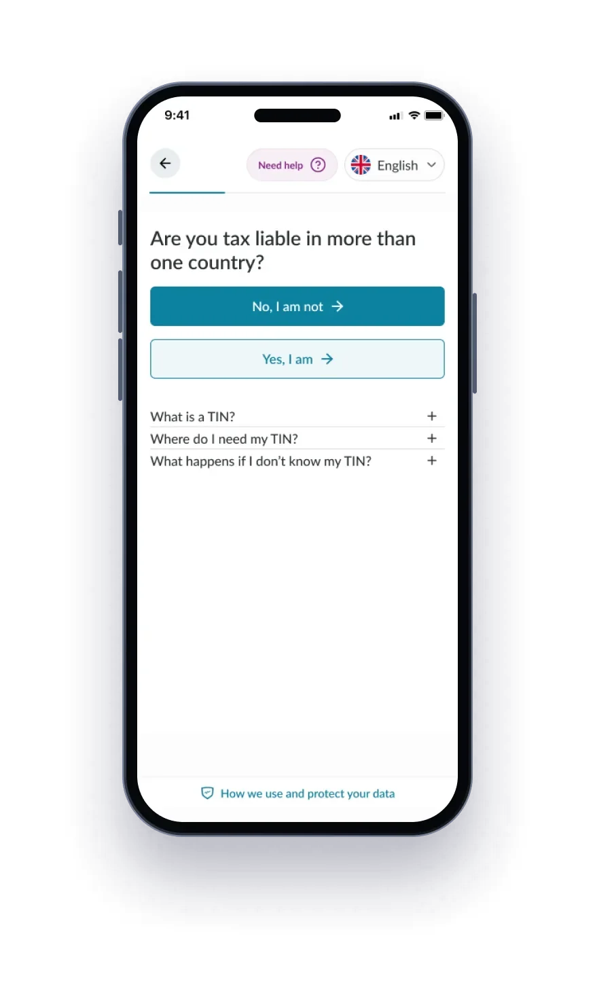


Swipe screens sideways →
After the last question the form ends. The user sees an account preparation screen, then a list of next steps: verify identity, deposit the amount, download visa documents.
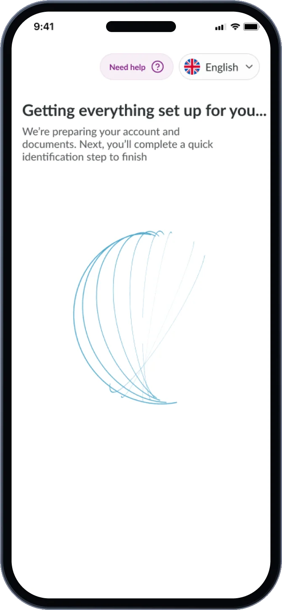
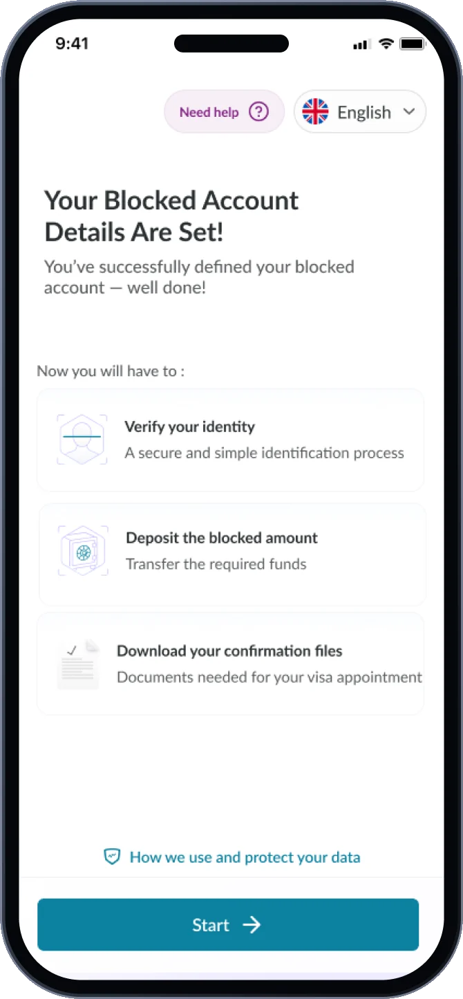
Swipe screens sideways →
Section 05 / 05
Outcomes, takeaways and what's next
The flow went to production in summer 2024 on Web and in the app.

"Setting up the account took only 10 minutes"Sair Khan, Trustpilot review, 28.08.2026
Questions can't be removed from a mandatory form. I worked with question order, explanations next to fields and branches so users see only their own questions.
The “question → answer → next step” scheme helped keep one logic on Web and in the app.
Early discussions helped account for technical limits before handing off the layouts.
Next
Agree on metrics with the product owner before launch: the share who start and finish the form, the steps with the most drop-off, completion time separate from identity verification. Test the flow in a usability test with users from different scenarios: student, sponsor, parent.